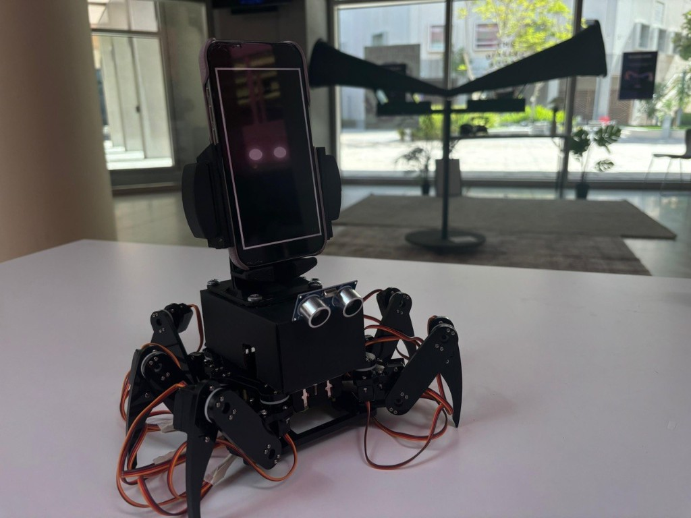
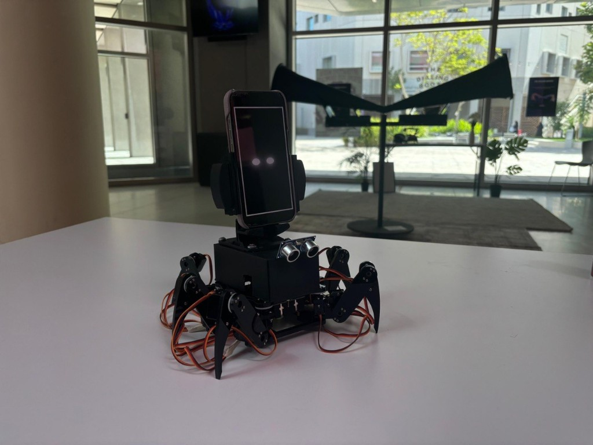
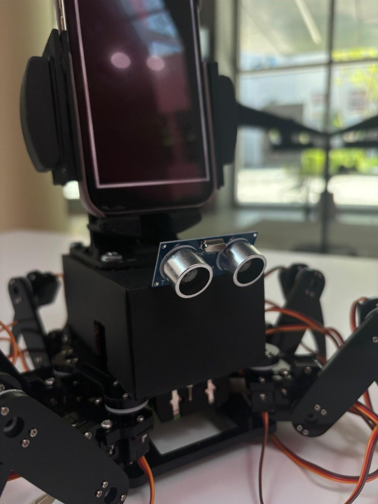
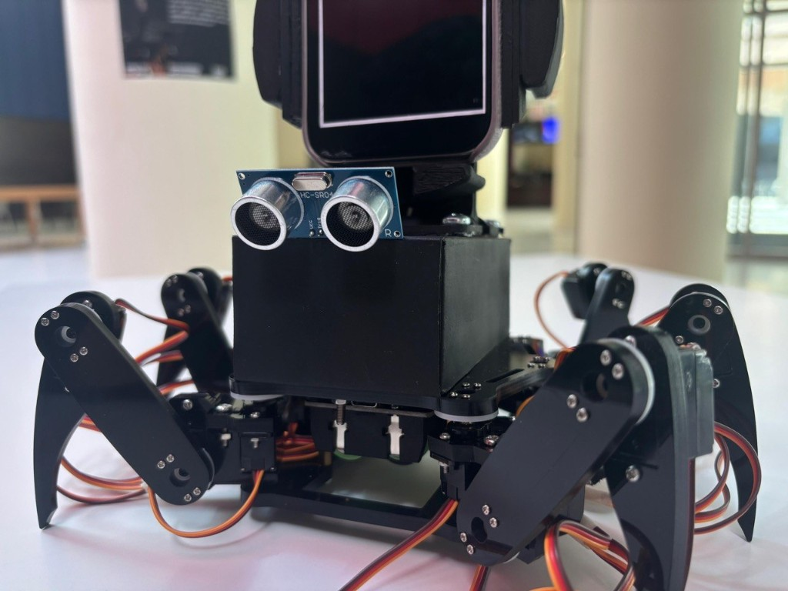
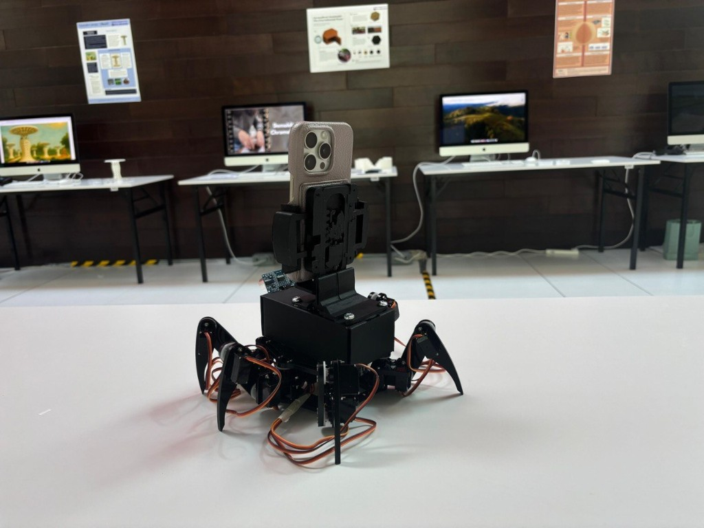

May 2025 · Speculative Robotics & Human–Robot Interaction
The Crawler
What if managing your phone meant letting it walk away?
Technical Developer · Collaborative Project
Concept & Inspiration
Rethinking Smartphone Management
We carry our phones almost everywhere. They have become constant companions, offering convenience and connection while demanding more of our attention than we often intend. Even the tools designed to help us manage our screen time exist within the devices we're trying to use less.
What if our phones could physically help us break these habits?
The Crawler emerged from this question. Conceived as a six-legged personal robot capable of carrying a smartphone, it explores an alternative approach to digital well-being through movement and physical interaction. Rather than simply reminding users to put their phones down, the robot could move the device out of reach, follow its owner when needed, or encourage breaks from prolonged use.
The project draws inspiration from personal robotic companions such as the Piaggio Gitamini, which follows its owner and carries belongings. The Crawler extends this idea beyond convenience, imagining a robot that not only carries our technology but also influences how we engage with it.
There is a playful contradiction at the heart of the concept. To help people regain control over their smartphones, we give the robot a degree of control over the phone itself.
Design & Development
Giving the Phone a Body
We began with a programmable Freenove hexapod, a six-legged robot capable of crawling and twisting its body in ways that resemble a living creature. Its movement offered an interesting foundation for exploring how an ordinary smartphone might acquire a sense of personality and apparent independence.
My technical work focused on programming the robot's movement and proximity-based responses using an Arduino Mega 2560 and an HC-SR04 ultrasonic sensor.
The implemented behavior follows a straightforward rule. When the path ahead is clear, the robot continues crawling forward. When an object comes within approximately 20 centimeters, it backs away and turns to change direction.
Simple movements. A different relationship.
By allowing the robot to retreat from someone approaching it, we began exploring how physical movement could make a familiar device appear less passive. The act of reaching for a phone could become an interaction in which the object no longer remains where its owner expects it to be.
This implementation formed an early technical exploration of the larger personal-assistant concept. The prototype demonstrated proximity-based movement and avoidance, while more advanced features such as tracking actual phone usage, recognizing users, and responding to their habits remained part of the speculative design vision.


Behavior & Interaction
A Companion With a Mind of Its Own
The Crawler was imagined as more than a mobile phone holder. Its movements, sounds, and physical interactions would give it a character of its own, turning ordinary moments of smartphone use into small encounters.
Approach it, and it might scurry away. Ignore it for too long, and it could nudge you like a curious cat. Spend too much time on your phone, and it might retreat, encouraging you to take a break.
These behaviors explore a different kind of interface. Instead of communicating solely through screens and notifications, the robot could express its intentions through distance, movement, and physical presence.
The working prototype demonstrated the fundamental retreat behavior through ultrasonic obstacle detection. The broader interaction scenarios, including usage-aware withdrawal, following its owner, nudging, and expressive sounds, represent the project's envisioned development beyond that implementation.
What interested us was how even simple movement could change the way people perceive an object. A phone that moves away might seem stubborn. One that approaches might appear affectionate or demanding. Neither interpretation requires the machine to possess those emotions.
Its behavior gives us a reason to imagine that it does.
Conclusion
Helping Without Taking Over
The Crawler began with a practical ambition: to explore whether a personal robot could help people manage their smartphone habits by changing how they physically access their devices.
Developing the prototype opened up a broader question about agency. The robot's programmed movements were relatively simple, yet they suggested a relationship in which the smartphone was no longer entirely passive. The user could approach it, but the robot could also retreat.
This tension is what makes the concept interesting. A companion designed to reduce our dependence on technology might occasionally frustrate us in the process. Its usefulness comes not only from carrying the phone, but from interrupting the expectation that it should always be within reach.
Future iterations could connect the robot's physical behavior to actual phone usage, allowing it to respond more meaningfully to individual habits while giving users control over when and how it intervenes.
The question is not simply whether a robot can manage our phones, but how much independence we are willing to give it to help us manage ourselves.
References